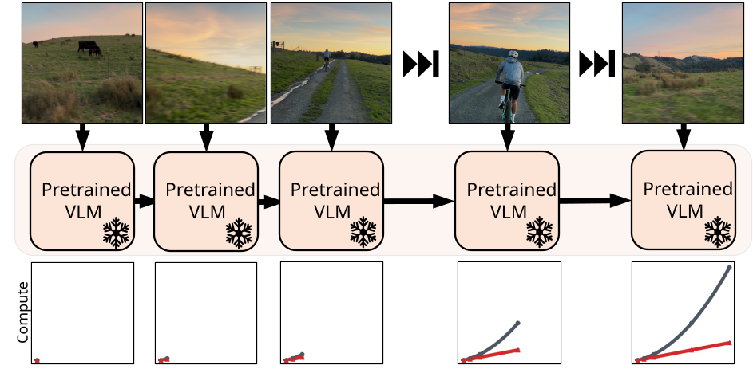
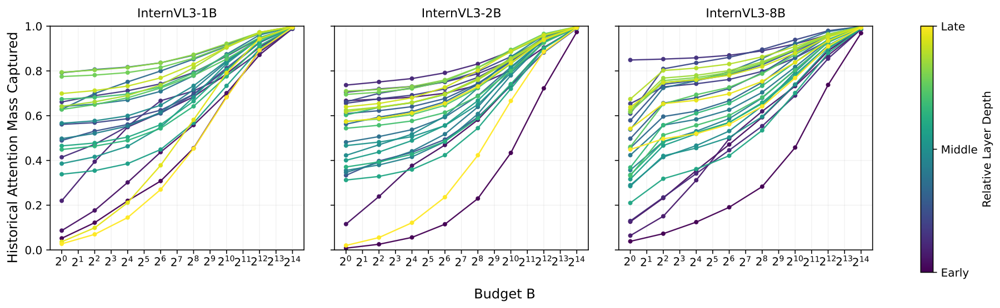
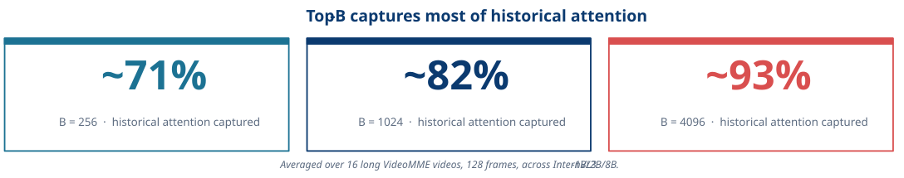
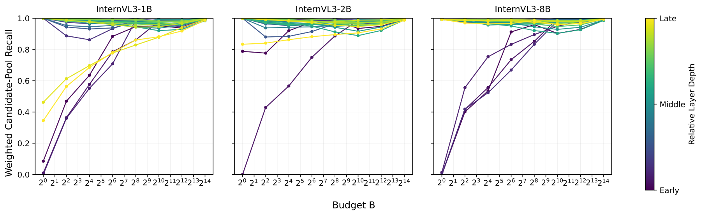
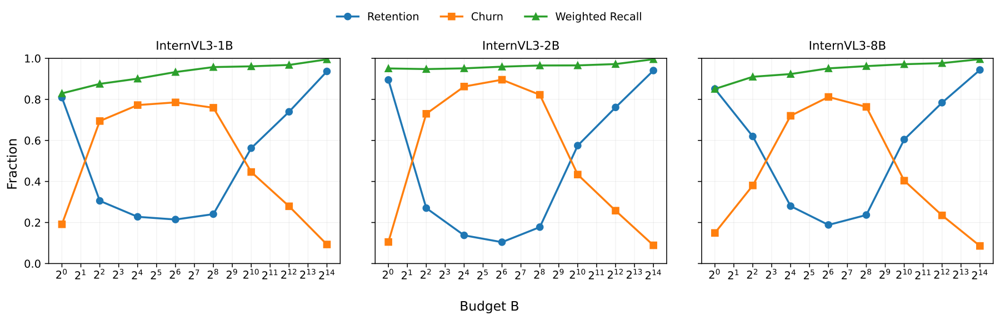
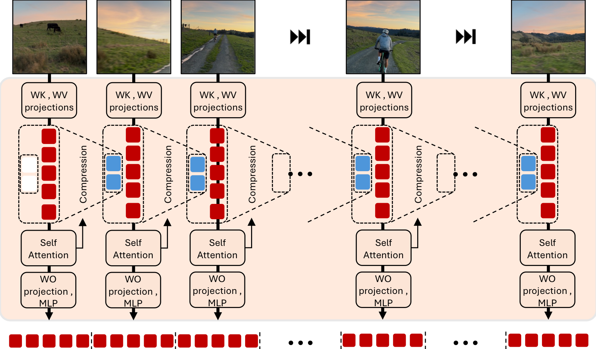
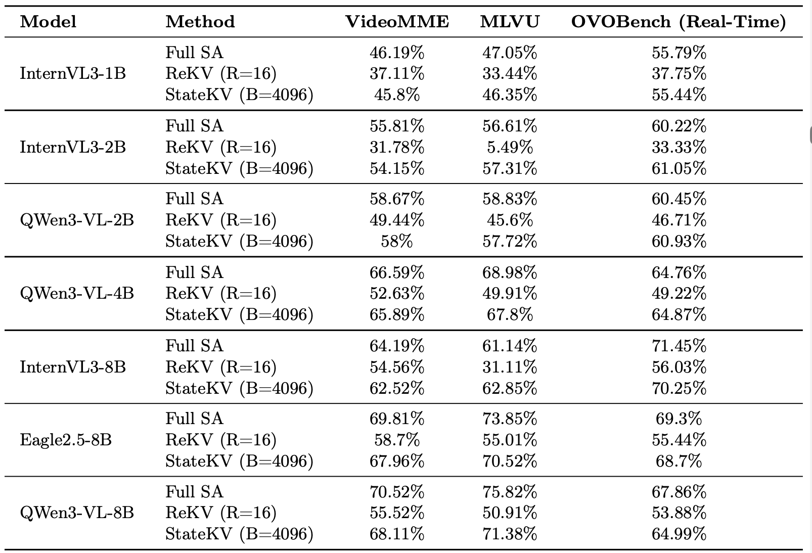
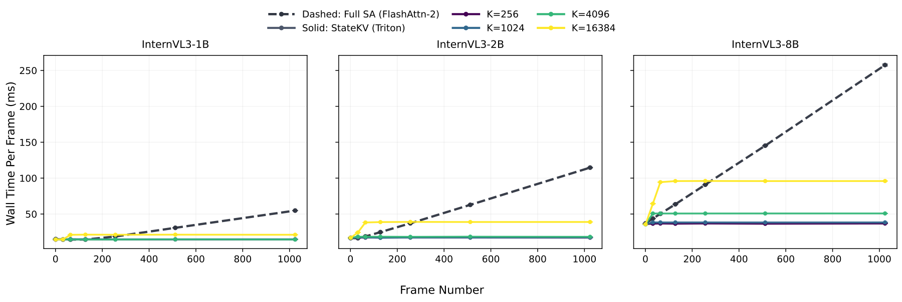

The biggest problem in video understanding today isn't the models. It's that we can barely run them.
Video VLMs have finally gotten good; even open-source models post surprisingly strong benchmark numbers. But these models are increasingly vital for long-horizon and streaming tasks such as autonomous driving and embodied robotics, where a system must integrate evidence over minutes or hours, often in real time. And that's exactly where today's architectures break down.
The central challenge is that computational cost grows quadratically with the length of the video. Because dominant architectures let each frame attend over all previous video tokens, the per-frame cost rises as the video grows, and the overall cost of processing the entire video scales quadratically with its length.
This creates a significant bottleneck for practical deployment and rules out real-time streaming applications entirely: a car that has driven for an hour is, in principle, harder to query than one that just pulled out of the driveway, even when both need an answer right now. But a real-time system needs its response time to stay flat as it keeps running. Linear overall complexity, or equivalently constant per-frame cost, is therefore central to scalable long-video understanding, and a critical prerequisite for streaming.

Our goal was simple: turn a pretrained video VLM into a linearly-scaling system without retraining it.
To do that, we started by asking a simple question: does every frame really need access to the entire history?
Why this should work
Two Observations
Observation 1: Most of the past does not matter
When a video model processes a frame, it technically has access to every token from every previous frame.
But does it actually use all of them?
When we analyzed attention patterns in pretrained video VLMs, we found that most cross-frame attention is concentrated on a surprisingly small subset of tokens. In many cases, a few thousand carefully chosen tokens capture the overwhelming majority of the attention mass.
If we somehow knew which tokens those were, we could approximate the effect of full attention without paying the full quadratic cost.


Observation 2: The important tokens change slowly
Finding the important tokens for frame n is only useful if we can also find them for frame n+1.
Fortunately, the set of useful tokens evolves gradually.
The tokens that matter for one frame tend to remain useful for the next frame, with only a small number of additions and removals over time.
This suggests that instead of recomputing an optimal memory from scratch, we can maintain and update a compact state as the video progresses.


The method
StateKV
StateKV maintains two memories.
A detailed state stores every token so that we preserve full information for final decoding.
A compressed state stores only the most important tokens and is used to carry information between frames.
After processing each frame, we update this compressed state using attention scores and carry it forward to the next frame.
The result is a recurrent architecture with fixed compute per frame, built entirely from a frozen pretrained transformer.

Results
Better Compute-Quality Tradeoffs
StateKV changes the Pareto frontier in two ways. First, it lets us significantly reduce computation while maintaining, or mostly maintaining, performance. Second, the compute reduction is large enough that we can run larger models at similar cost to a smaller full self-attention model.
Longer sequences
Why Linear Scaling Matters More Over Time
The same compute gap becomes much starker as videos get longer. Extrapolating from 512 frames to 1024 frames and then to 3600 frames, roughly an hour of video, the difference between O(N) and O(N^2) scaling dominates the practical cost of inference.
Benchmarks
Across Model Families, Parameter Scales, and Datasets
The same carried-memory intervention transfers across seven video VLMs with different parameter counts and model families, evaluated on three video benchmarks. StateKV closely approximates full self-attention while consistently outperforming prior streaming work, including ReKV.
For a fair efficiency comparison, sliding-window retrieval with 16 frames and StateKV with cache budget B = 4096 are compute-matched.

Implementation
A Triton Kernel for Practical Wall Time
StateKV needs attention-derived importance scores while building the cache. A naive eager implementation can expose those scores, but it materializes the full attention matrix. To make the cache-building path practical, we implement a custom Triton kernel inspired by FlashAttention-style tiling: it computes attention without forming the full matrix while accumulating the statistics needed for token selection.
This matters in wall-clock time. At the main cache budget we evaluate, B = 4096 tokens, StateKV is faster per frame than full self-attention with FlashAttention-2, even for the largest models in our comparison. The bounded cache turns the algorithmic scaling advantage into an actual runtime advantage.

Resources
Code and Materials
Citation
BibTeX
@misc{eyzaguirre2026linearscalingvideovlms,
title = {Linear Scaling Video VLMs for Long Video Understanding},
author = {Cristobal Eyzaguirre and Jiajun Wu and Juan Carlos Niebles},
year = {2026},
eprint = {2605.31598},
archivePrefix = {arXiv},
primaryClass = {cs.CV},
url = {https://arxiv.org/abs/2605.31598}
}